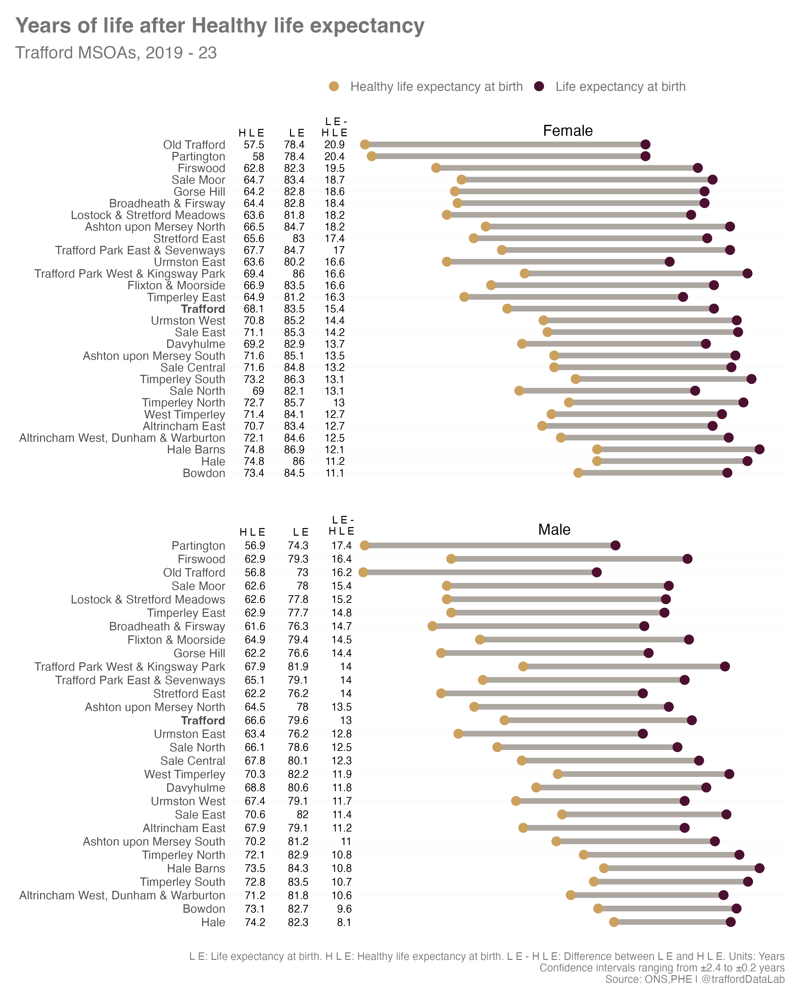

Health state life expectancy
The ONS published the Health state life expectancy at birth estimates for MSOAs for 2019 to 2023 (based on five-year pooled data) including the 28 MSOAs in Trafford. The publication uses self-reported “good” of “very good” health to define Healthy life expectancy and the self-declared disability state to define Disability-free life expectancy from responses of the Census 2021.
Females in Trafford as a whole had a disability-free life expectancy of 67.8 years, a healthy life expectancy of 68.1 years, and a life expectancy of 83.5 years. For males, the equivalent figures are 67.2 years, 66.6 years and 79.6 years respectively. This means that, on average, females spend 15.7 years of their lives with a disability and 15.4 years in less than good health, while males spent 12.4 years and 13 years respectively.
The gap in Life expectancy between the lowest area (Old Trafford) and the highest area (Hale Barns) is 8.5 years for females and 11.3 years for males. The gap in Healthy life expectancy between the lowest area (Old Trafford) and the highest area (Hale) is 17.3 years for females and 17.4 years for males.
The chart below shows the estimated number of years lived after healthy life expectancy for each of Trafford's MSOAs, ordered from highest to lowest. Females in Old Trafford are estimated to spend almost 21 years in less than good health, compared with around 11 years in Bowdon. Males in Old Trafford are estimated to spend 17.4 years in less than good health, compared with 8.1 years in Hale.
These data shows that while life expectancy varies considerably across Trafford, differences in healthy life expectancy are even greater, meaning that residents in the most disadvantaged areas not only die younger but also spend more years of their lives in less than good health or with limiting conditions.
